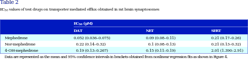

<?xml version="1.0" encoding="UTF-8"?>
<table title="table2" id="table2" class="tabcontent" xmlns="http://www.w3.org/1999/xhtml">
 <tr>
  <td>
   
   <p>corpus-oa-validation/10.1111_bph.13547/tables/table2/table.svg.png</p>
  </td>
  <td>
   <table class="table">
    <caption/>
    <tr>
     <th class="cell">Mephedrone Nor-mephedrone 4-OH-mephedrone </th>
     <th class="cell">0.052 (0.036–0.075) 0.22 (0.14–0.32) 0.19 (0.13–0.267) </th>
     <th class="cell">0.09 (0.08–0.11) 0.1 (0.08–0.13) 0.15 (0.11–0.19) </th>
     <th class="cell">0.21 (0.17–0.26) 0.21 (0.13–0.32) 2.01 (1.390–2.91) </th>
    </tr>
    <tr>
     <td class="cell">Data are represented as the mean and 95% confdence intervals in brackets obtained from nonlinear regression fts as shown in Figure 4.</td>
    </tr>
   </table>
   <p>corpus-oa-validation/10.1111_bph.13547/tables/table2/table.svg.html</p>
  </td>
 </tr>
</table>
